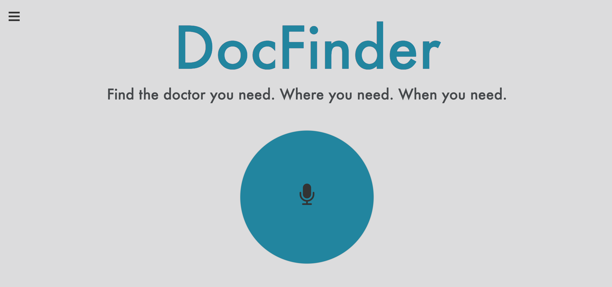
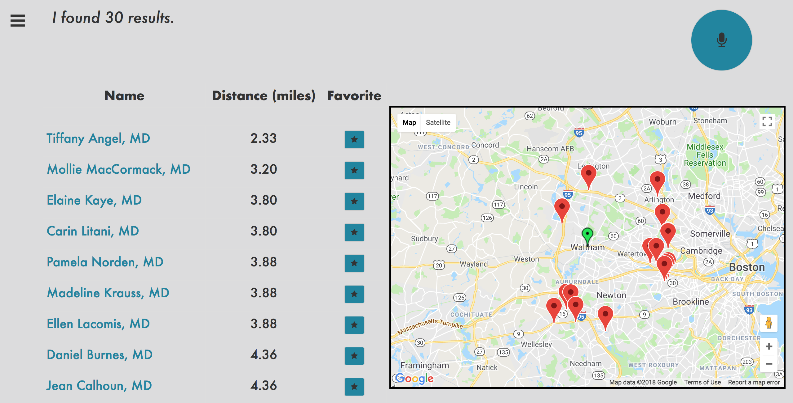
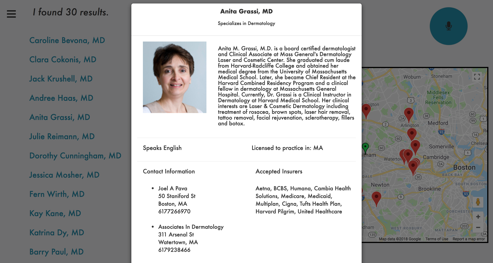
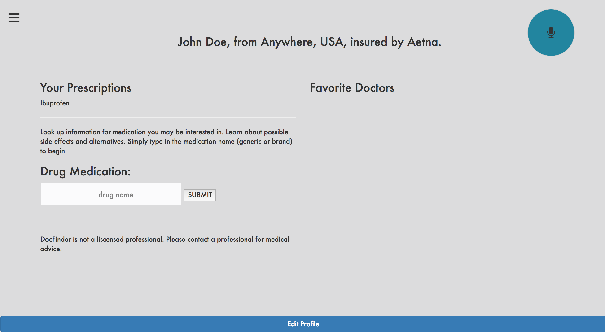
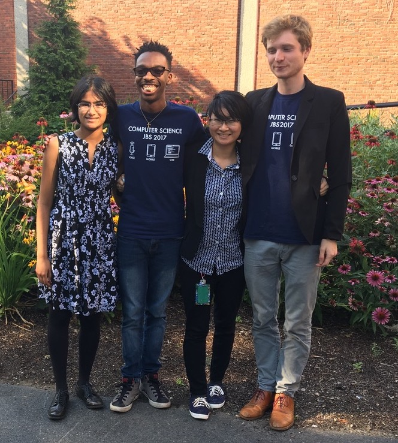

DocFinder
Find the doctor you need. Where you need. When you need.
DocFinder serves as a fully voice-interactive web-based application that matches patients with medical providers in their area using search metrics such as insurance, specialty, and languages spoken. The results, which are displayed on an interactive map interface, include important yet often overlooked statistics on medical providers, including payouts from big pharmaceutical companies to promote their products.
From the home screen, users can click on the microphone icon and speak their request for a doctor based off of their specialty, location, insurance, and spoken languages. For example, “Find me a dermatologist in Waltham, MA who takes Aetna". From here, the application sends the utterance to the DialogFlow API, which parses the string into specific categories: the type of doctor, location, and insurance company. The API returns a JSON object with these parameters, which the application then sends to the BetterDoctor API. This API is a doctor database that holds various information of many doctors throughout the United States. BetterDoctor API returns a JSON object of doctors that fit the specified criteria that presented to the user as a table of doctors from which they can chose as ordered by proximity.
Each doctor in the list is connected to a modal pop-up profile that displays a photo, biography, and other important information relevant to their practice. The profiles also contain a chart that shows payments received from pharmaceutical companies; courtesy of the Open Payments Data API. And each doctor also has a location marked on a small Google Maps map that shows the locations of doctors in relation to the user’s own location.
DocFinder users can also take advantage of user profiles to favorite specific doctors and log their medication prescriptions. Users can readily search for drug information in the included drug information search engine courtesy of the Iodine API.
Resources
Collaborators: Nila
Mandal, Claire Sun, and Eben Holderness

Github Repository
Slide Deck
Demo Video
Awards
Best Speech Application: The AVIOS 2017/2018 Student Speech Application Contest
Media
AVIOS Speech Application Contest (2018)Student Feature Case Study: Provider Data powers Doctor search with speech recognition (2017)